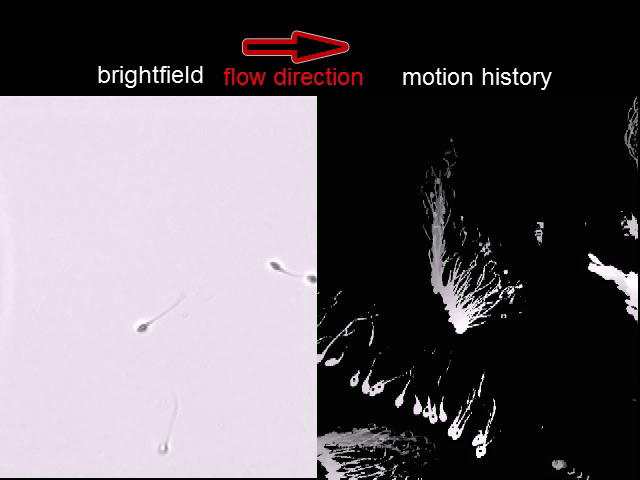
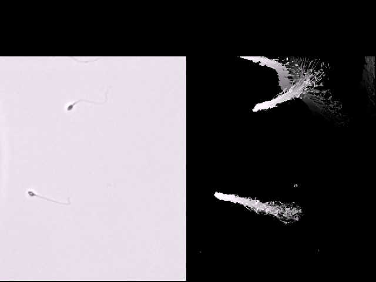

Sperm movement and reorientation
The left field shows human sperm under brightfield microscopy. The right field is the authors’ processed motion history of the same scene. A laboratory pipette imposes flow; this is not a view inside the female reproductive tract.
Publication-file clock; no experiment-time conversion.
Swim-up-selected sperm from source-described healthy human donors, in modified human tubal fluid at room temperature (approximately 22 °C). Flow was imposed by a micropipette in a dish. Individual donor ages and clinical outcomes are not assigned to this field.
The publication contains 175 frames at 25 fps, approximately seven file seconds; general methods report 30 fps acquisition. The export mapping is unverified. Use qualitative movement and orientation only: no biological speed, flagellar frequency or fertility diagnosis is inferred. The movie alone does not establish passive-only rheotaxis or the absence of calcium signalling.
Ordered source frames
Frame 50 · decoded file PTS 2.04 s

Frame 87 · decoded file PTS 3.52 s

Frame 174 · decoded file PTS 7.00 s

Zhang et al. (2016), Human sperm rheotaxis: a passive physical process, Scientific Reports 6:23553, Supplementary Video S1. CC BY 4.0. The complete two-panel source field is retained. Lossless VP9 RGB browser derivative; all 175 decoded frames and the FFmpeg presentation timestamps match the original AVI. The original AVI’s final frame lacks an explicit timestamp; FFmpeg’s generated presentation time is documented. No crop, interpolation, colour grading or new anatomical mark. Source and preparation · Decoded-frame proof · Reproduction record.